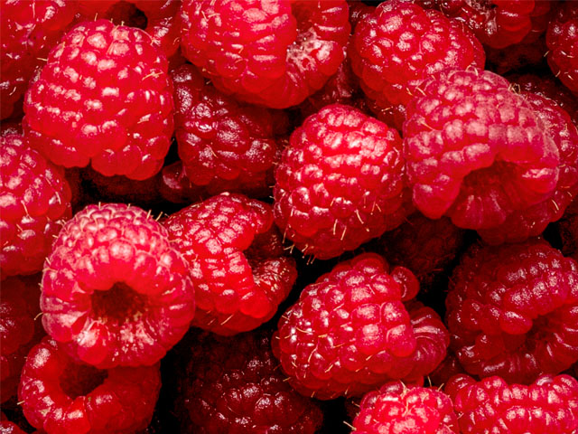

| Tipo producto | Fruta |
|---|---|
| Producto | Frambuesa |
| Descripción | Delicadas y jugosas, nuestras frambuesas provienen de los fértiles campos de la región del Maule, cultivadas con esmero por el experto agricultor Raúl De la Fuente en la pintoresca comuna de Molina. Estas frambuesas, cuidadosamente seleccionadas, ofrecen un sabor dulce y una textura fresca que deleitarán tus sentidos. Cada bocado es una explosión de frescura y calidad, cultivadas con pasión y compromiso con la excelencia agrícola. |
| Fotos |  |
| Región | Región del Maule |
| Comuna | Molina |
| Nombre productor | Raúl De la Fuente |
| Email productor | raul.de.la.fuente@jaja.cl |
| Número celular productor | +569 7354 9823 |